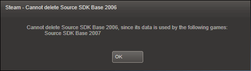

After I tried downloading Source SDK Base 2007 for use with Black Mesa, I noticed that Steam also auto-downloaded Source SDK Base 2006. I paused the download, and tried to remove it to prevent it from using disk space (2808 MB, according to Steam). However, when I try to remove it within Steam, Steam says I can’t since its data is used by Source SDK Base 2007:

I have been able to play Black Mesa even if Source SDK Base 2006 was not fully downloaded (I paused it at around 50%).
Is it normal for Source SDK Base 2007 or Black Mesa to require Source SDK Base 2006? If not, how do I remove it?